Today's visual analysisआजचे दृश्य विश्लेषण (reel slides)(रील स्लाइड्स)
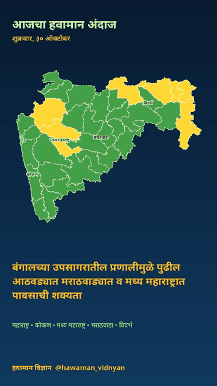
View each slide separatelyसर्व स्लाइड्स स्वतंत्रपणे पाहा
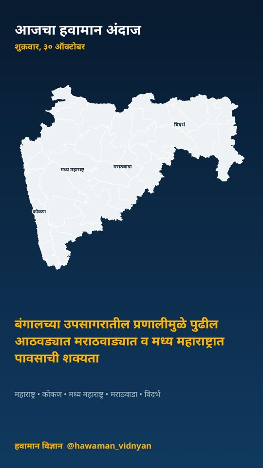
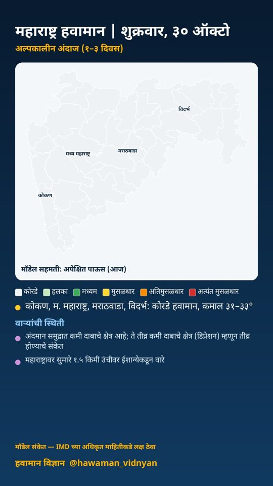
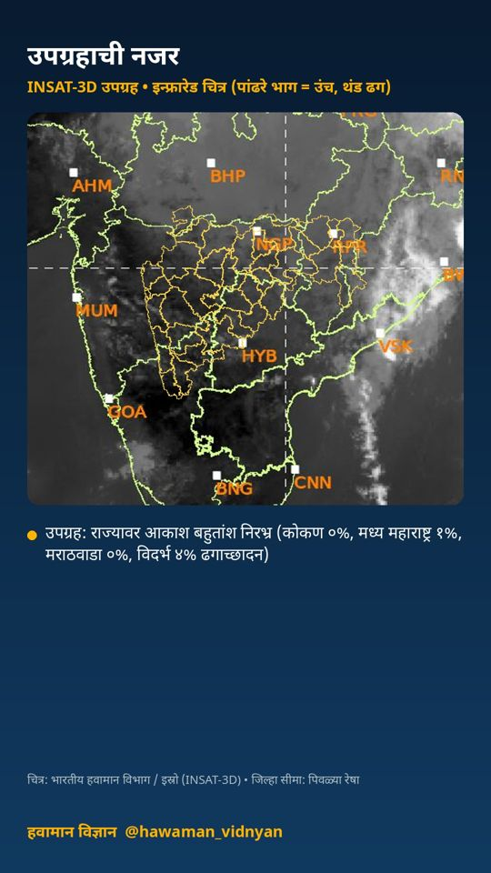
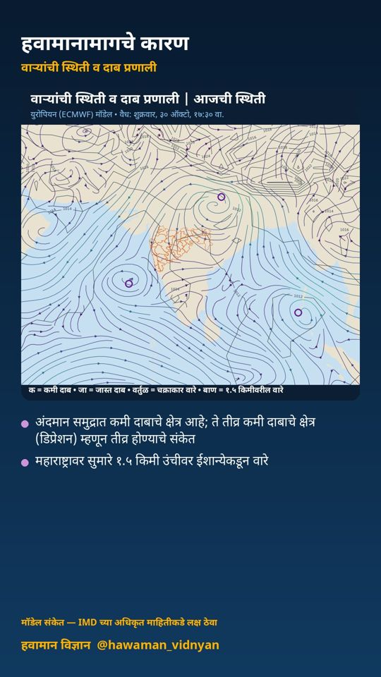
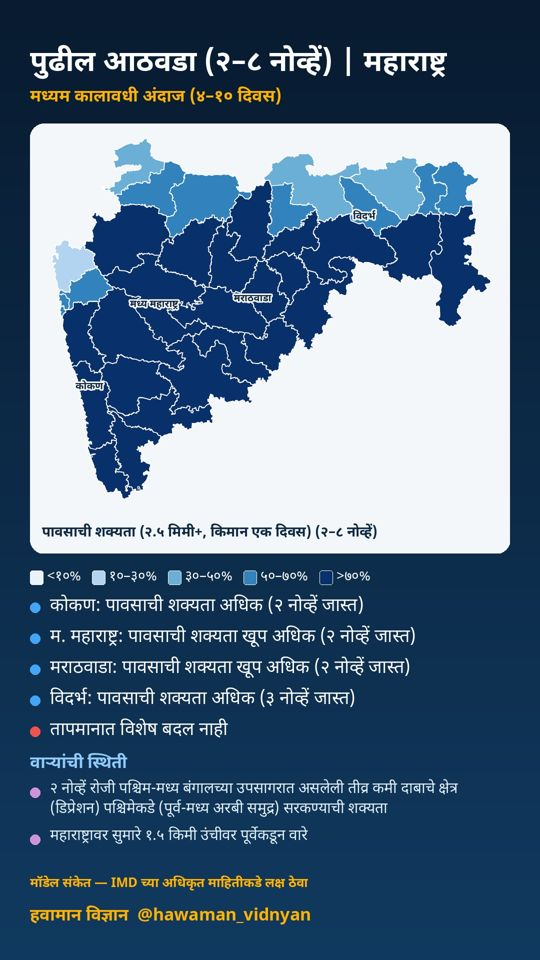
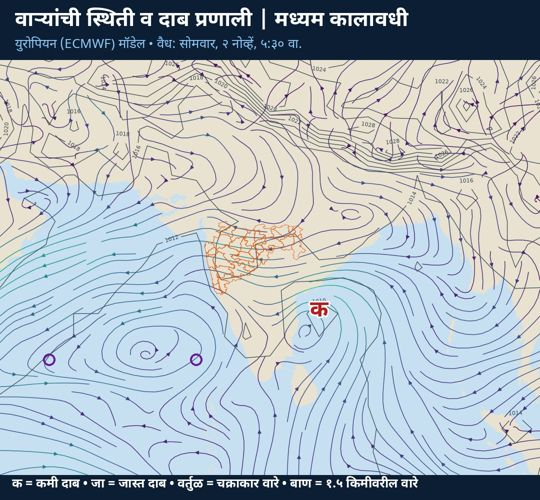
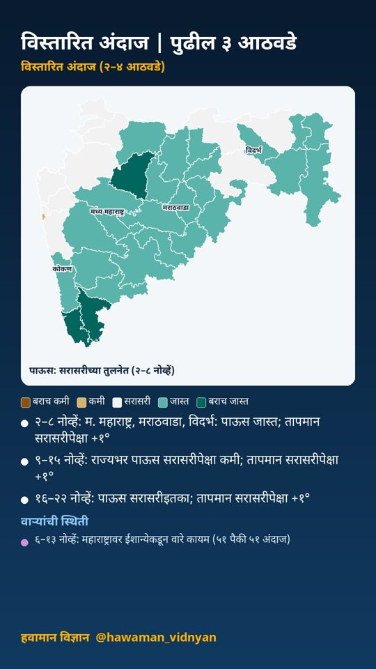
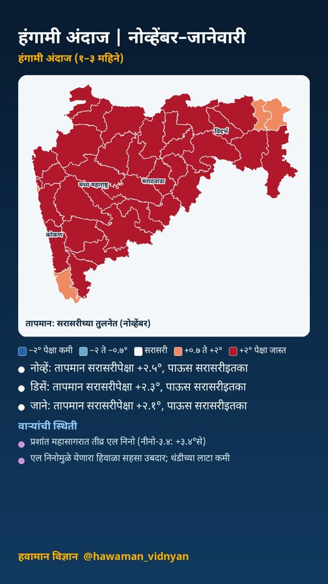
This page is written in Marathi.
अल्पकालीन विश्लेषण (१–३ दिवस) · वैयक्तिक विश्लेषणावर आधारित
🟡 अहिल्यानगर, नाशिक, गोंदिया, नागपूर +३: मेघगर्जना व विजा
☀️ कोकण, मराठवाडा: कोरडे हवामान
⛈️ म. महाराष्ट्र, विदर्भ: तुरळक ठिकाणी मेघगर्जनेची शक्यता
🌀 अंदमान समुद्रात कमी दाबाचे क्षेत्र आहे
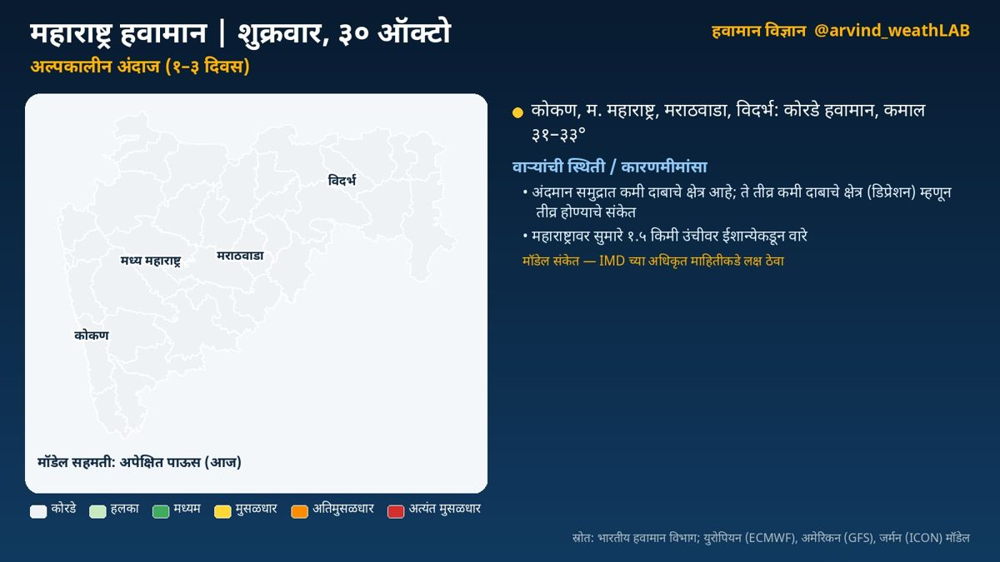
हवामानामागचे कारण
🌀 वाऱ्यांची स्थिती व कारणमीमांसा:
• अंदमान समुद्रात कमी दाबाचे क्षेत्र आहे; ते तीव्र कमी दाबाचे क्षेत्र (डिप्रेशन) म्हणून तीव्र होण्याचे संकेत; प्रणाली पश्चिमेकडे (पश्चिम-मध्य बंगालचा उपसागर) सरकण्याची शक्यता (मॉडेल संकेत; IMD च्या अधिकृत माहितीकडे लक्ष ठेवा)
• पूर्व-मध्य अरबी समुद्रात चक्राकार वाऱ्यांची स्थिती आहे; ते कमी दाबाचे क्षेत्र म्हणून तीव्र होण्याचे संकेत; प्रणाली आग्नेयेकडे (आग्नेय अरबी समुद्र) सरकण्याची शक्यता
• मध्य भारतावर कमी दाबाचे क्षेत्र आहे
• महाराष्ट्रावर सुमारे १.५ किमी उंचीवर ईशान्येकडून वारे
🏙️ आज शहरांचे कमाल/किमान तापमान (हवामान विभाग):
मुंबई ३३/२०, रत्नागिरी ३३/२३, पुणे ३५/२२, नाशिक ३३/१९, कोल्हापूर ३२/२०, छ. ३३/१९, नागपूर ३०/२२
📌 निरीक्षणे:
🌡️ काल सर्वाधिक: मुंबई (कुलाबा) ३६.१°
❄️ नीचांकी: महाबळेश्वर १७.२°
🛰️ उपग्रह: राज्यावर आकाश बहुतांश निरभ्र (कोकण १%, मध्य महाराष्ट्र १%, मराठवाडा ०%, विदर्भ १% ढगाच्छादन)
ℹ️ स्रोत: भारतीय हवामान विभाग; युरोपियन (ECMWF), अमेरिकन (GFS), जर्मन (ICON) मॉडेल
⚠️ हे मॉडेल-आधारित विश्लेषण आहे. अधिकृत इशाऱ्यांसाठी भारतीय हवामान विभाग (IMD) व स्थानिक प्रशासनाच्या सूचना पाहा.
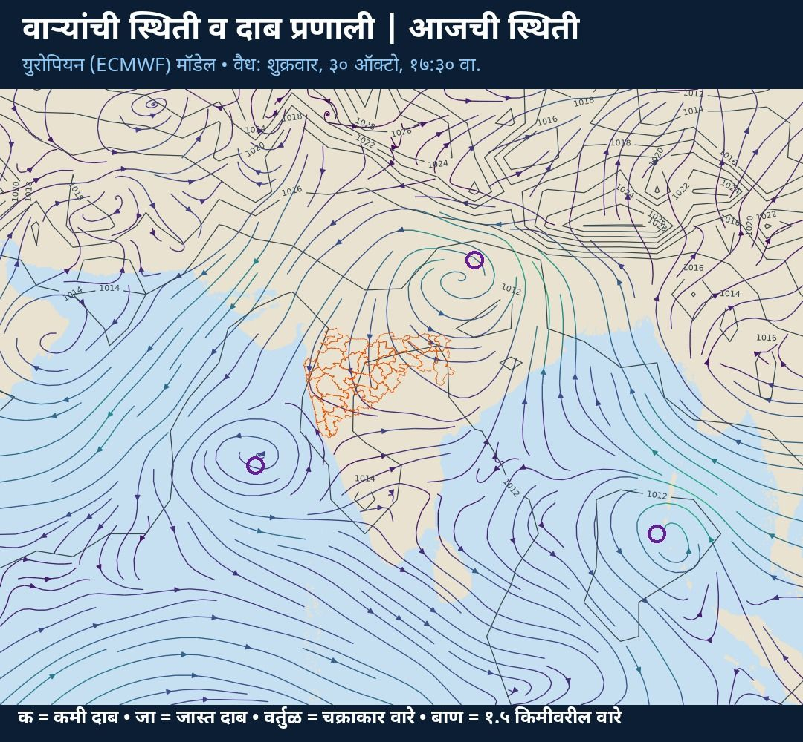
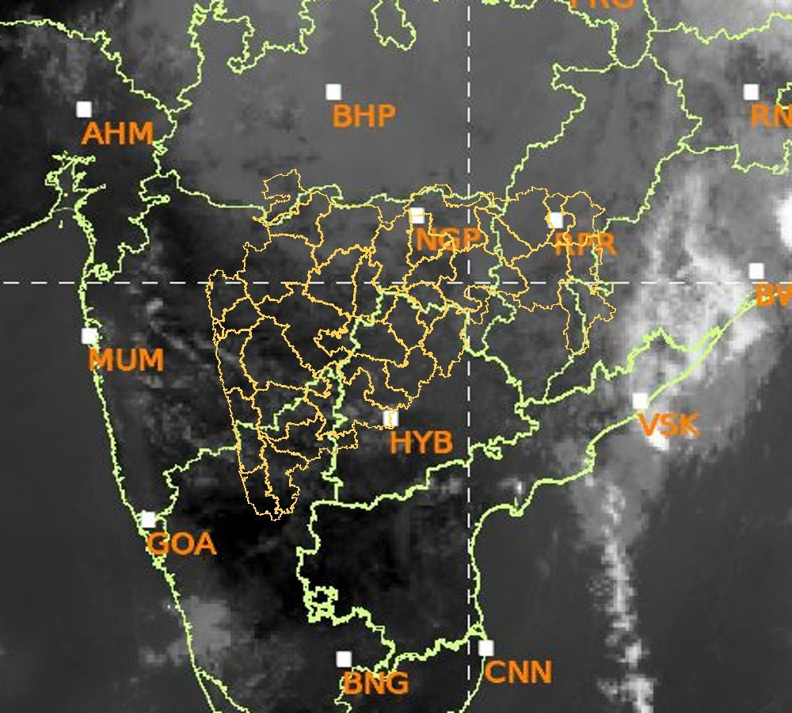
सविस्तर हवामान विश्लेषण
अल्पकालीन विश्लेषण (१–३ दिवस)
नमस्कार! आज शुक्रवार, ३० ऑक्टोबर. पाहूया महाराष्ट्राचे हवामान विश्लेषण. भारतीय हवामान विभागाने अहिल्यानगर, नाशिक, गोंदिया, नागपूर, अमरावती, भंडारा, गडचिरोली जिल्ह्यांसाठी मेघगर्जना व विजा संदर्भात पिवळा इशारा दिला आहे. कोकण: कोरडे हवामान. कमाल तापमान सुमारे ३३ आणि किमान २२ अंश सेल्सिअस. मध्य महाराष्ट्र: तुरळक ठिकाणी मेघगर्जनेची शक्यता. कमाल तापमान सुमारे ३३ आणि किमान २१ अंश सेल्सिअस. मराठवाडा: कोरडे हवामान. कमाल तापमान सुमारे ३२ आणि किमान २० अंश सेल्सिअस. विदर्भ: तुरळक ठिकाणी मेघगर्जनेची शक्यता. कमाल तापमान सुमारे ३१ आणि किमान २१ अंश सेल्सिअस. काल राज्यातील सर्वाधिक तापमान मुंबई (कुलाबा) येथे ३६.१ अंश (सरासरीपेक्षा १.८° जास्त) नोंदले गेले. आता पाहूया हवामानामागचे कारण, म्हणजेच वाऱ्यांची स्थिती. अंदमान समुद्रात कमी दाबाचे क्षेत्र आहे; ते तीव्र कमी दाबाचे क्षेत्र (डिप्रेशन) म्हणून तीव्र होण्याचे संकेत; प्रणाली पश्चिमेकडे (पश्चिम-मध्य बंगालचा उपसागर) सरकण्याची शक्यता (मॉडेल संकेत; IMD च्या अधिकृत माहितीकडे लक्ष ठेवा). पूर्व-मध्य अरबी समुद्रात चक्राकार वाऱ्यांची स्थिती आहे; ते कमी दाबाचे क्षेत्र म्हणून तीव्र होण्याचे संकेत; प्रणाली आग्नेयेकडे (आग्नेय अरबी समुद्र) सरकण्याची शक्यता. मध्य भारतावर कमी दाबाचे क्षेत्र आहे. महाराष्ट्रावर सुमारे १.५ किमी उंचीवर ईशान्येकडून वारे.
मध्यम कालावधी विश्लेषण (४–१० दिवस)
आता पुढील आठवड्याचा, म्हणजे २–८ नोव्हें या काळाचे विश्लेषण. युरोपियन हवामान केंद्राच्या ५१ वेगवेगळ्या संभाव्य मॉडेल-परिणामांवर आधारित. कोकण: पावसाची शक्यता अधिक (२ नोव्हें जास्त). मध्य महाराष्ट्र: पावसाची शक्यता खूप अधिक (२ नोव्हें जास्त). मराठवाडा: पावसाची शक्यता खूप अधिक (२ नोव्हें जास्त). विदर्भ: पावसाची शक्यता अधिक (३ नोव्हें जास्त). तापमानात विशेष बदल नाही. या काळातील वाऱ्यांची स्थिती: २ नोव्हें रोजी पश्चिम-मध्य बंगालच्या उपसागरात असलेली तीव्र कमी दाबाचे क्षेत्र (डिप्रेशन) पश्चिमेकडे (पूर्व-मध्य अरबी समुद्र) सरकण्याची शक्यता (मॉडेल संकेत; IMD च्या अधिकृत माहितीकडे लक्ष ठेवा). या प्रणालीमुळे राज्यात ढगाळ हवामान व पावसाची शक्यता वाढू शकते. २ नोव्हें रोजी आग्नेय अरबी समुद्रात असलेली कमी दाबाचे क्षेत्र उत्तरेकडे (पूर्व-मध्य अरबी समुद्र) सरकण्याची शक्यता. महाराष्ट्रावर सुमारे १.५ किमी उंचीवर पूर्वेकडून वारे. पुढील काळात हवेच्या मधल्या थरातील बाष्प कमी होत आहे.
विस्तारित विश्लेषण (२–४ आठवडे)
आता पुढील तीन आठवड्यांचा विस्तारित विश्लेषण. आठवडा १, २–८ नोव्हें: म. महाराष्ट्र, मराठवाडा, विदर्भ: पाऊस जास्त. तापमान सरासरीपेक्षा १.५ अंश जास्त राहण्याची शक्यता. आठवडा २, ९–१५ नोव्हें: राज्यभर पाऊस सरासरीपेक्षा कमी. तापमान सरासरीपेक्षा ०.७ अंश जास्त राहण्याची शक्यता. आठवडा ३, १६–२२ नोव्हें: पाऊस सरासरीइतका. तापमान सरासरीपेक्षा १.० अंश जास्त राहण्याची शक्यता. वाऱ्यांचा प्रवाह: ६–१३ नोव्हें: महाराष्ट्रावर ईशान्येकडून वारे कायम (५१ पैकी ५१ सदस्य); पूर्व/ईशान्येकडील वारे सहसा कोरडे हवामान आणतात. भारतीय हवामान विभाग व आयआयटीएम पुणे यांचे विस्तारित कालावधी नकाशेही हेच संकेत तपासण्यासाठी पाहा.
हंगामी विश्लेषण (१–३ महिने)
आता नोव्हेंबर ते जानेवारी या हंगामाचा दीर्घकालीन विश्लेषण. नोव्हेंबर: तापमान सरासरीपेक्षा बरेच जास्त, सुमारे +२.५ अंश; पाऊस सरासरीइतका. डिसेंबर: तापमान सरासरीपेक्षा बरेच जास्त, सुमारे +२.३ अंश; पाऊस सरासरीइतका. जानेवारी: तापमान सरासरीपेक्षा बरेच जास्त, सुमारे +२.१ अंश; पाऊस सरासरीइतका. प्रशांत महासागरात तीव्र एल निनो (नीनो-३.४: +३.४°से); तो अजून बळकट होत आहे. एल निनोमुळे येणारा हिवाळा सहसा उबदार; थंडीच्या लाटा कमी.
हे मॉडेल-आधारित विश्लेषण आहे. अधिकृत इशाऱ्यांसाठी भारतीय हवामान विभाग (IMD) व स्थानिक प्रशासनाच्या सूचना पाहा.
दैनंदिन अपडेटसाठी X वर फॉलो करा: @arvind_weathLAB
This alert is informational and based on my personal analysis. For official weather forecasts and warnings, please see the India Meteorological Department website mausam.imd.gov.in or the 'Mausam' / 'Damini' apps.हा इशारा माझ्या वैयक्तिक विश्लेषणावर आधारित माहितीपर मजकूर आहे. अधिकृत हवामान अंदाज व इशाऱ्यांसाठी कृपया भारतीय हवामान विभागाचे संकेतस्थळ mausam.imd.gov.in किंवा 'मौसम' / 'दामिनी' ॲप पाहा.